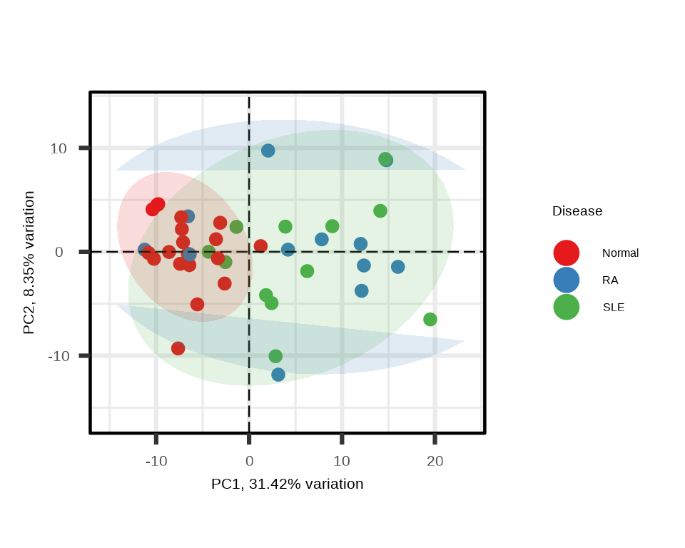
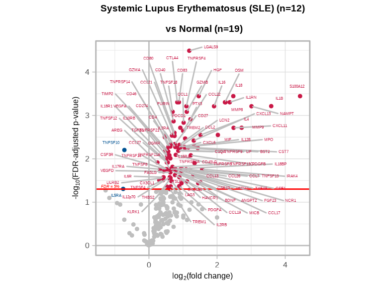
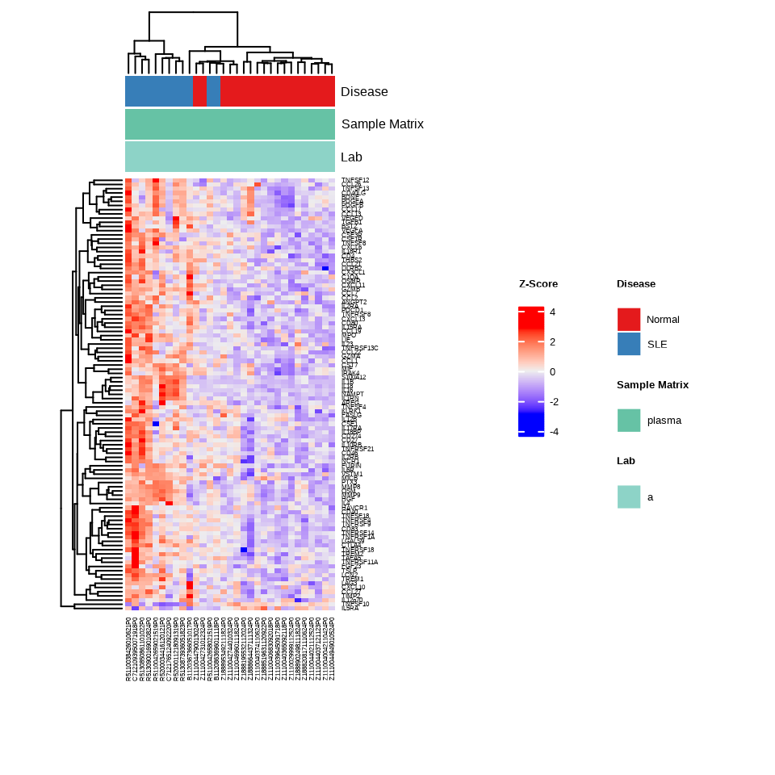
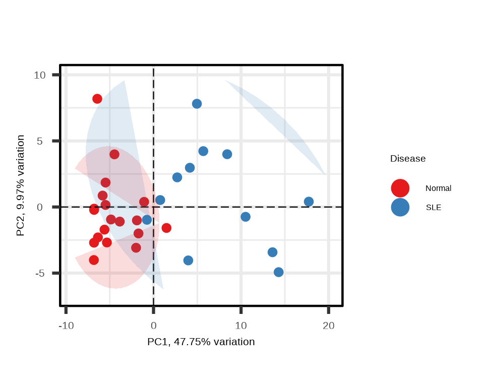
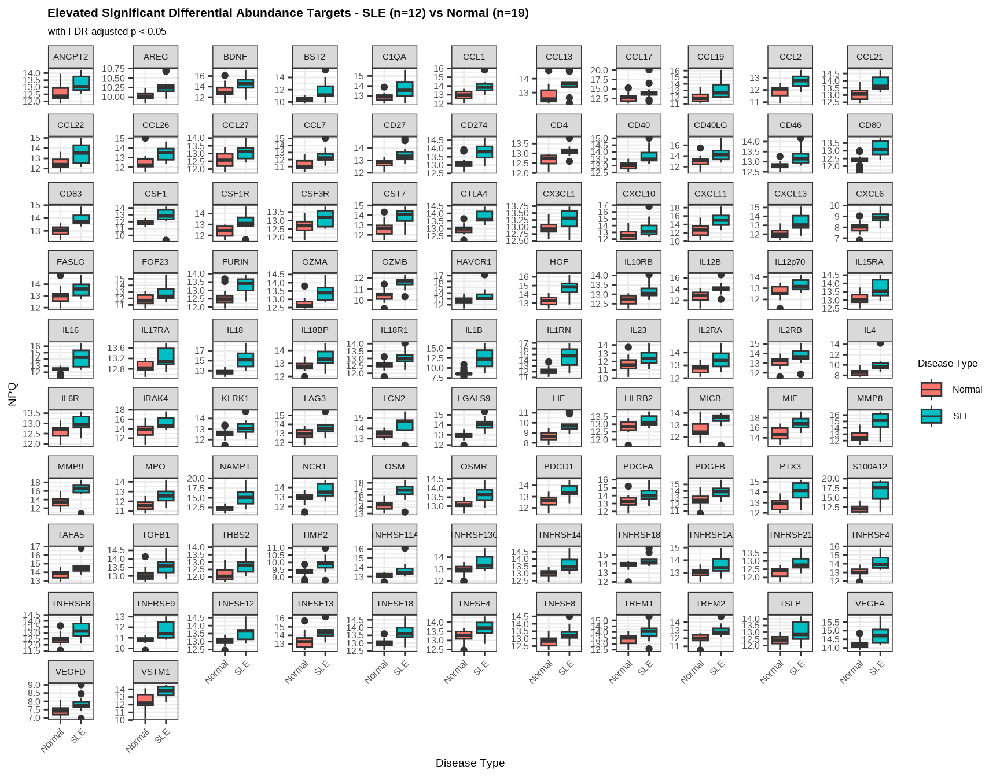
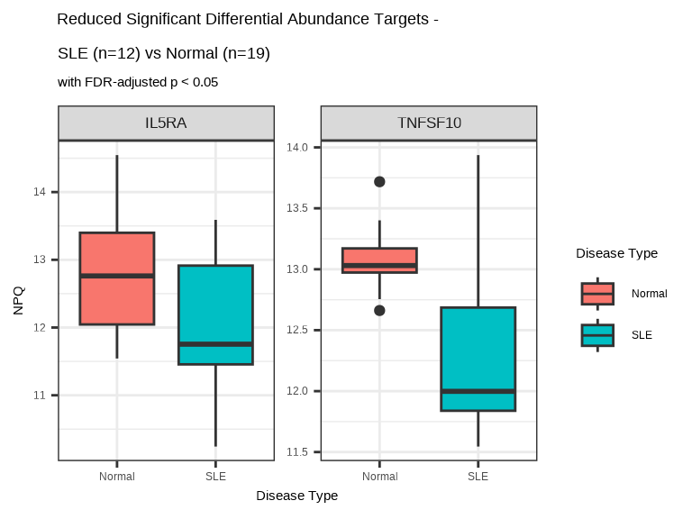
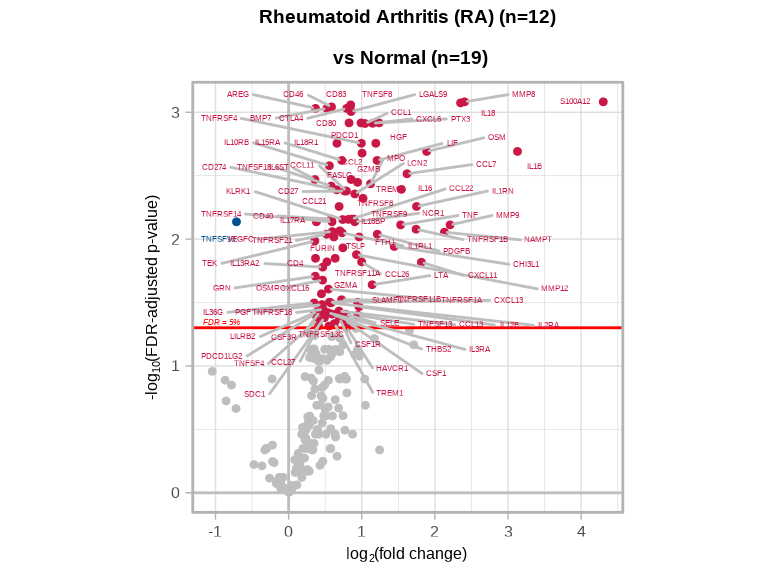
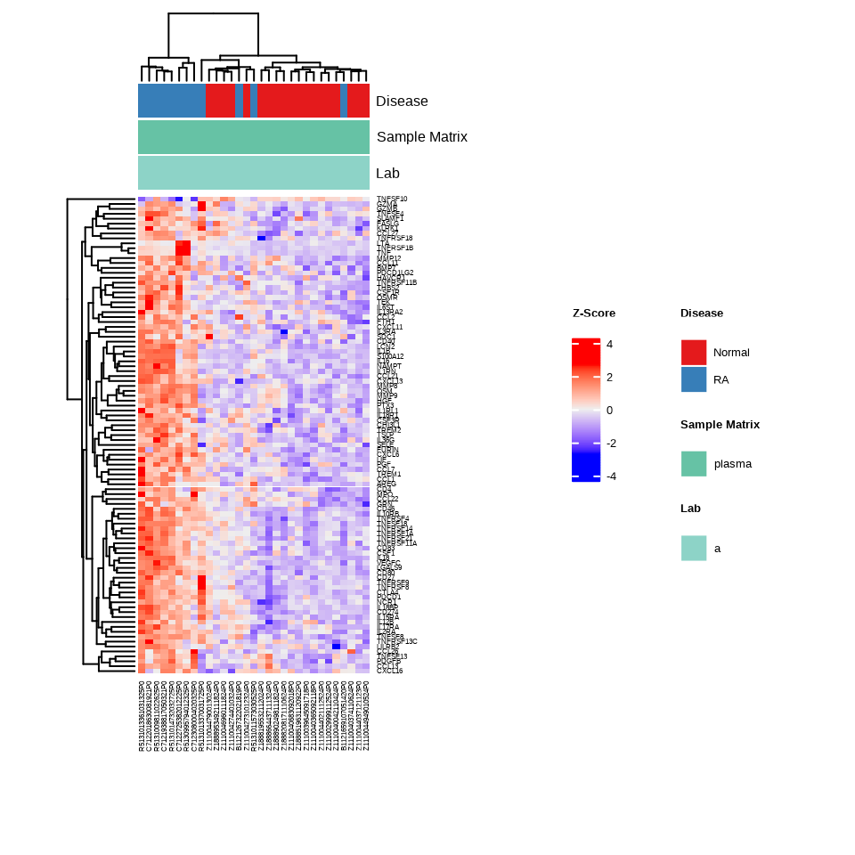
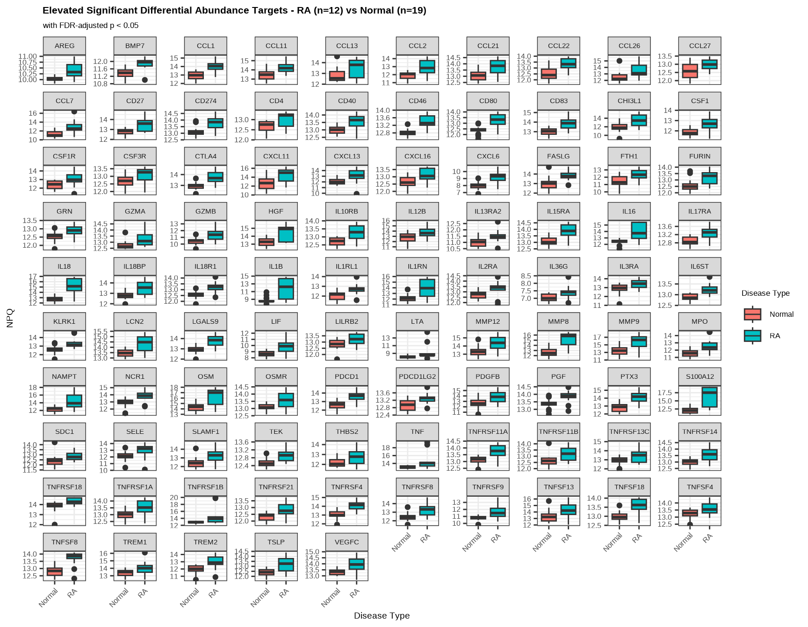

Chapter 7 Case Study:
Identifying Proteomic Signatures in Lupus and Rheumatoid Arthritis
7.1 Overview
Differential abundance analysis is a powerful tool for proteomic studies, enabling researchers to identify proteins that are differentially abundant between experimental conditions. In this chapter, we demonstrate a complete differential abundance workflow using the NULISAseq Inflammation Panel to compare inflammatory diseases against healthy controls.
We’ll analyze a dataset containing samples from patients with:
- Systemic Lupus Erythematosus (SLE): An autoimmune disease where the immune system attacks its own tissues, causing widespread inflammation and tissue damage
- Rheumatoid Arthritis (RA): A chronic inflammatory disorder primarily affecting joints, but potentially involving other organ systems
- Normal controls: Healthy individuals without inflammatory disease
This workflow will cover data import, target detectability filtering, visualization of target abundance, statistical testing, and interpretation of disease-specific protein signatures.
7.2 Data Preparation
7.2.2 Import Data
We begin by importing the NULISAseq data file:
data_dir <- system.file("extdata", package = "NULISAseqR")
data.a <- importNULISAseq(files = file.path(data_dir, "Inflammation_250_RQ_demo_2025-05-20-Lab-A.xml"))#> Using single IC to normalize data.7.2.3 Prepare Sample Metadata
Next, we extract and prepare the sample metadata, filtering for experimental samples and setting the reference level for the Disease variable:
metadata.a <- data.a$merged$samples %>%
filter(sampleType == "Sample") %>%
mutate(Disease = relevel(Disease, ref = "normal"))
# Sample counts per group
n_normal <- sum(metadata.a$Disease == "normal")
n_sle <- sum(metadata.a$Disease == "lupusSle")
n_ra <- sum(metadata.a$Disease == "rheumatoidArthritis")
# Display sample distribution
table(metadata.a$Disease)#>
#> normal lupusSle rheumatoidArthritis
#> 19 12 12The relevel() function is important here as it sets “normal” as the reference group for all subsequent statistical comparisons. This means our differential abundance results will show changes in diseased samples relative to healthy controls.
7.3 Apply Detectability Threshold
Preview Detectability Table
The detectability table is stored in data.a$merged$detectability.
#> Preview of detectability table:
To ensure robust statistical analysis, we can filter proteins based on the detectability across samples. We typically use a 50% detectability threshold for plasma samples, meaning a target must be detected in at least 50% of samples to be included:
detectability_threshold <- 0.5
targets_passed <- data.a$merged$detectability %>%
filter(`plasma (n = 43)` > 50) %>%
pull(Target)
# Identify excluded targets
excluded_targets <- setdiff(rownames(data.a$merged$Data_NPQ), targets_passed)
cat("Number of targets excluded:", length(excluded_targets), "\n")#> Number of targets excluded: 5#> Targets excluded: CNTF, CTSS, IFNW1, IL11, IL327.4 Global Data Visualization
Before performing differential abundance analysis, we will examine the overall structure of the data using unsupervised visualization methods. These methods are unsupervised in the sense that we do not deliberately segregate data by disease class. Rather, we observe how samples are sorted according to their similarity in protein abundance patterns while we annotate samples by disease class.
7.4.1 Prepare Metadata for Visualization
First, we clean up the metadata labels for better plot readability:
7.4.2 Hierarchical Clustering Heatmap
The heatmap provides a global view of protein abundance patterns across all samples and identifies natural groupings:
h <- generate_heatmap(data = data.a$merged$Data_NPQ,
sampleInfo = metadata_rename,
sampleName_var = "sampleName",
sample_subset = metadata_rename$sampleName,
target_subset = targets_passed,
annotate_sample_by = c("Disease", "Sample Matrix", "Lab"))
Interpretation: The heatmap shows hierarchical clustering of both samples (columns) and proteins (rows). Look for:
- Clustering of samples by disease type (indicated by the annotation bars)
- Groups of proteins with similar abundance patterns
- Elevated levels of inflammatory markers in disease groups relative to controls
7.4.3 Principal Component Analysis
PCA shows the clustering of samples by groups in reduced dimensional space, highlighting variance in the dataset:
p <- generate_pca(data = data.a$merged$Data_NPQ,
sampleInfo = metadata_rename,
sampleName_var = "sampleName",
sample_subset = metadata_rename$sampleName,
target_subset = targets_passed,
annotate_sample_by = "Disease")
Interpretation: In the PCA plot:
- Each point represents a sample
- Distance between points reflects similarity in protein abundance patterns
- Good separation between disease groups suggests distinct proteomic signatures
- PC1 and PC2 percentages indicate how much variation each component explains
7.5 Statistical Testing
Next we perform linear modeling to identify proteins that are significantly different in mean abundance between disease groups and controls:
lmTest_da <- lmNULISAseq(data = data.a$merged$Data_NPQ[targets_passed, metadata.a$sampleName],
sampleInfo = metadata.a,
sampleName_var = "sampleName",
modelFormula = "Disease")The lmNULISAseq() function fits a linear model for each protein with NPQ as outcome and disease group as predictor.
Model Results
The model results are stored in lmTest_da$modelStats.
#> Preview of `lmTest_da$modelStats` Results Table (rounded to 3 digits):For comparing SLE to Normal:
target: Target nameDiseaselupusSle_coef: Difference in mean NPQ (log2 fold change) between SLE and NormalDiseaselupusSle_pval: Unadjusted p-valueDiseaselupusSle_pval_FDR: FDR-adjusted p-valueDiseaselupusSle_pval_bonf: Bonferroni-adjusted p-value
7.6 Systemic Lupus Erythematosus (SLE) Analysis
7.6.1 Background
Systemic Lupus Erythematosus is characterized by chronic inflammation affecting multiple organ systems. The immune dysregulation in SLE involves abnormal B and T cell activation, autoantibody production, and inflammatory cytokine release. The proteomic signature of SLE typically shows:
- Elevated inflammatory cytokines and chemokines
- Increased acute phase proteins
- Markers of immune activation
- Proteins involved in tissue damage and repair
7.6.2 Volcano Plot
The volcano plot visualizes both the magnitude (fold change) and statistical significance of protein changes:
volcanoPlot(coefs = lmTest_da$modelStats$DiseaselupusSle_coef,
p_vals = lmTest_da$modelStats$DiseaselupusSle_pval_FDR,
target_labels = lmTest_da$modelStats$target,
title = paste0("Systemic Lupus Erythematosus (SLE) (n=", n_sle, ") \n vs Normal (n=", n_normal, ")"))
Interpretation:
- X-axis (coefficient): Log2 fold change; positive values indicate elevated levels in SLE
- Y-axis (-log10 p-value): Statistical significance; higher values = more significant
- Colored points: Proteins passing the FDR < 0.05 threshold
- Upper left/right corners: Most significantly changed proteins
7.6.3 Visualizations
Now we examine only the samples and proteins relevant to the SLE comparison:
# Select SLE and normal samples
sle_samples <- metadata.a %>%
filter(Disease %in% c("normal", "lupusSle")) %>%
pull(sampleName)
# Identify significantly differential proteins
sig_targets_sle <- lmTest_da$modelStats %>%
filter(DiseaselupusSle_pval_FDR < 0.05) %>%
pull(target)
cat("Number of significant targets in SLE:", length(sig_targets_sle), "\n")#> Number of significant targets in SLE: 1027.6.3.1 SLE-Specific Heatmap
h_sle <- generate_heatmap(data = data.a$merged$Data_NPQ,
sampleInfo = metadata_rename,
sampleName_var = "sampleName",
sample_subset = sle_samples,
target_subset = sig_targets_sle,
annotate_sample_by = c("Disease", "Sample Matrix", "Lab"),
row_fontsize = 6,
col_fontsize = 6)
This heatmap focuses exclusively on proteins we found to be significantly altered in SLE, making disease-specific patterns more apparent.
7.6.3.2 SLE-Specific PCA
p_sle <- generate_pca(data = data.a$merged$Data_NPQ,
sampleInfo = metadata_rename,
sampleName_var = "sampleName",
sample_subset = sle_samples,
target_subset = sig_targets_sle,
annotate_sample_by = "Disease")
Using only significantly differential proteins often enhances separation between groups in PCA.
7.6.4 Directional Analysis
We can separate elevated and reduced proteins to understand the nature of proteomic changes:
# Elevated proteins (higher in SLE)
sig_targets_sle_up <- lmTest_da$modelStats %>%
filter(DiseaselupusSle_pval_FDR < 0.05, DiseaselupusSle_coef > 0) %>%
pull(target)
# Reduced proteins (lower in SLE)
sig_targets_sle_down <- lmTest_da$modelStats %>%
filter(DiseaselupusSle_pval_FDR < 0.05, DiseaselupusSle_coef < 0) %>%
pull(target)
cat("Elevated targets:", length(sig_targets_sle_up), "\n")#> Elevated targets: 100#> Reduced targets: 2Prepare Long Format Data
We clean up the covariate names in the long data frame for better boxplot readability:
7.6.4.1 Elevated Proteins in SLE
data.long %>%
filter(Target %in% sig_targets_sle_up,
SampleName %in% sle_samples) %>%
ggplot(aes(x = `Disease Type`, y = NPQ, fill = `Disease Type`)) +
geom_boxplot() +
facet_wrap(~ Target, scales = "free_y") +
labs(title = paste0("Elevated Significant Differential Abundance Targets - SLE (n=", n_sle, ") vs Normal (n=", n_normal, ")"),
subtitle = "with FDR-adjusted p < 0.05") +
theme(
plot.title = element_text(size = 16, face = "bold"),
plot.subtitle = element_text(size = 13),
axis.title.x = element_text(size = 14),
axis.title.y = element_text(size = 14),
axis.text.x = element_text(size = 12, angle = 45, hjust = 1),
axis.text.y = element_text(size = 12),
strip.text = element_text(size = 11),
legend.title = element_text(size = 13),
legend.text = element_text(size = 12)
)
Interpretation: Elevation of these proteins in SLE reflects multiple aspects of autoimmune pathology:
- Immune cell activation and co-stimulation: Elevated CD40, CD80, CD83, CTLA4, and PD-1 indicate activated T cells and antigen-presenting cells
- Pro-inflammatory cytokine signaling: Increased IL-1β, IL-6R, IL-12, IL-18, and TNF family members drive systemic inflammation
- Chemokine-mediated cell trafficking: CCL and CXCL chemokines (e.g., CXCL10, CCL2) recruit immune cells to sites of inflammation
- Type I interferon response: BST2 and other interferon-stimulated genes reflect the characteristic interferon signature of lupus
- Tissue damage markers: MMP8, MMP9, and S100A12 indicate ongoing tissue degradation and neutrophil activation
- Immune checkpoint dysregulation: Elevated LAG3, PDCD1, and CTLA4 suggest attempted but inadequate negative regulation
7.6.4.2 Reduced Proteins in SLE
data.long %>%
filter(Target %in% sig_targets_sle_down,
SampleName %in% sle_samples) %>%
ggplot(aes(x = `Disease Type`, y = NPQ, fill = `Disease Type`)) +
geom_boxplot() +
facet_wrap(~ Target, scales = "free_y") +
labs(title = paste0("Reduced Significant Differential Abundance Targets - \nSLE (n=", n_sle, ") vs Normal (n=", n_normal, ")"),
subtitle = "with FDR-adjusted p < 0.05") +
theme(strip.text = element_text(size = 13))
Interpretation: Decreased abundance of IL5RA and TNFSF10 in SLE samples may indicate:
- Altered immune regulation: TNFSF10 (TRAIL) promotes apoptosis of autoreactive cells; reduced levels may impair clearance of self-reactive lymphocytes
- Dysregulated cytokine signaling: IL5RA reduced levels suggests disrupted eosinophil and type 2 immune responses
- Chronic inflammation effects: Prolonged autoimmune activation can suppress certain immune regulatory pathways
- Loss of tolerance mechanisms: Reduced pro-apoptotic signaling may contribute to persistence of autoreactive immune cells
7.7 Rheumatoid Arthritis (RA) Analysis
7.7.1 Background
Rheumatoid Arthritis is a chronic inflammatory disorder that primarily affects synovial joints but can have systemic manifestations. The pathophysiology involves:
- Autoimmune targeting of joint tissues
- Synovial inflammation and proliferation
- Cartilage and bone destruction
- Systemic inflammation
The proteomic profile of RA often shows markers of:
- Joint inflammation and damage
- Systemic inflammatory response
- Matrix degradation
- Immune activation
7.7.2 Volcano Plot
volcanoPlot(coefs = lmTest_da$modelStats$DiseaserheumatoidArthritis_coef,
p_vals = lmTest_da$modelStats$DiseaserheumatoidArthritis_pval_FDR,
target_labels = lmTest_da$modelStats$target,
title = paste0("Rheumatoid Arthritis (RA) (n=", n_ra, ") \n vs Normal (n=", n_normal, ")"))
Compare this volcano plot to the SLE plot above. Are there:
- Proteins significantly changed in both conditions (shared inflammatory pathways)?
- Disease-specific signatures unique to RA or SLE?
- Similar magnitude of changes between the two diseases?
7.7.3 Visualizations
# Select RA and normal samples
ra_samples <- metadata.a %>%
filter(Disease %in% c("normal", "rheumatoidArthritis")) %>%
pull(sampleName)
# Identify significantly differential proteins
sig_targets_ra <- lmTest_da$modelStats %>%
filter(DiseaserheumatoidArthritis_pval_FDR < 0.05) %>%
pull(target)
cat("Number of significant targets in RA:", length(sig_targets_ra), "\n")#> Number of significant targets in RA: 967.7.3.1 RA-Specific Heatmap
h_ra <- generate_heatmap(data = data.a$merged$Data_NPQ,
sampleInfo = metadata_rename,
sampleName_var = "sampleName",
sample_subset = ra_samples,
target_subset = sig_targets_ra,
annotate_sample_by = c("Disease", "Sample Matrix", "Lab"),
row_fontsize = 6,
col_fontsize = 6)
7.7.4 Directional Analysis
# Elevated proteins (higher in RA)
sig_targets_ra_up <- lmTest_da$modelStats %>%
filter(DiseaserheumatoidArthritis_pval_FDR < 0.05,
DiseaserheumatoidArthritis_coef > 0) %>%
pull(target)
# Reduced proteins (lower in RA)
sig_targets_ra_down <- lmTest_da$modelStats %>%
filter(DiseaserheumatoidArthritis_pval_FDR < 0.05,
DiseaserheumatoidArthritis_coef < 0) %>%
pull(target)
cat("Elevated targets:", length(sig_targets_ra_up), "\n")#> Elevated targets: 95#> Reduced targets: 17.7.4.1 Elevated Proteins in RA
data.long %>%
filter(Target %in% sig_targets_ra_up,
SampleName %in% ra_samples) %>%
ggplot(aes(x = `Disease Type`, y = NPQ, fill = `Disease Type`)) +
geom_boxplot() +
facet_wrap(~ Target, scales = "free_y") +
labs(title = paste0("Elevated Significant Differential Abundance Targets - RA (n=", n_ra, ") vs Normal (n=", n_normal, ")"),
subtitle = "with FDR-adjusted p < 0.05") +
theme(
plot.title = element_text(size = 16, face = "bold"),
plot.subtitle = element_text(size = 13),
axis.title.x = element_text(size = 14),
axis.title.y = element_text(size = 14),
axis.text.x = element_text(size = 12, angle = 45, hjust = 1),
axis.text.y = element_text(size = 12),
strip.text = element_text(size = 11),
legend.title = element_text(size = 13),
legend.text = element_text(size = 12)
)
Interpretation: Elevated proteins in RA reflect multiple aspects of autoimmune joint inflammation:
- Immune cell activation and co-stimulation: Elevated CD40, CD80, CD83, CTLA4, and PD-1 indicate activated T cells and antigen-presenting cells
- Pro-inflammatory cytokine signaling: Increased IL-1β, TNF, IL-18, IL-6ST, and TNF receptor family members drive chronic inflammation
- Chemokine-mediated cell trafficking: CCL and CXCL chemokines (e.g., CCL2, CXCL13) recruit immune cells to inflamed synovial tissue
- Joint destruction markers: Matrix metalloproteinases (MMP8, MMP9, MMP12) and cartilage degradation protein CHI3L1 indicate ongoing tissue damage
- Neutrophil activation: S100A12, MPO, and LCN2 reflect neutrophil infiltration characteristic of RA synovitis
- Angiogenesis and tissue remodeling: VEGFC, HGF, and growth factors support pannus formation and joint destruction
- Immune checkpoint dysregulation: Elevated LAG3, PDCD1, CTLA4, and PD-L2 suggest attempted but inadequate immune regulation
7.7.4.2 Reduced Proteins in RA
data.long %>%
filter(Target %in% sig_targets_ra_down,
SampleName %in% ra_samples) %>%
ggplot(aes(x = `Disease Type`, y = NPQ, fill = `Disease Type`)) +
geom_boxplot() +
facet_wrap(~ Target, scales = "free_y") +
labs(title = paste0("Reduced Significant Differential Abundance Targets - \nRA (n=", n_ra, ") vs Normal (n=", n_normal, ")"),
subtitle = "with FDR-adjusted p < 0.05") +
theme(strip.text = element_text(size = 13))
Interpretation: Reduced TNFSF10 (TRAIL) abundance in RA may reflect:
- Impaired apoptosis regulation: TRAIL promotes death of activated immune cells; reduced levels may allow persistence of autoreactive lymphocytes in synovial tissue
- Loss of immune tolerance: Decreased pro-apoptotic signaling contributes to accumulation of inflammatory cells in joints
- Synovial hyperplasia: Reduced TRAIL may fail to limit proliferation of synovial fibroblasts, contributing to pannus formation
7.8 Comparing Disease Signatures
7.8.1 Overlap Analysis
To understand shared versus disease-specific biology, we can examine the overlap of significant proteins:
# Proteins significant in both diseases
shared_targets <- intersect(sig_targets_sle, sig_targets_ra)
# Disease-specific proteins
sle_specific <- setdiff(sig_targets_sle, sig_targets_ra)
ra_specific <- setdiff(sig_targets_ra, sig_targets_sle)
cat("Shared significant targets:", length(shared_targets), "\n")#> Shared significant targets: 73#> SLE-specific targets: 29#> RA-specific targets: 23# Display shared and specific targets
# Create a data frame with comma-separated strings and counts
overlap_table <- data.frame(
"Category" = c("Shared (SLE and RA)", "SLE-Specific", "RA-Specific"),
"Count" = c(length(shared_targets), length(sle_specific), length(ra_specific)),
"Targets" = c(
paste(shared_targets, collapse = ", "),
paste(sle_specific, collapse = ", "),
paste(ra_specific, collapse = ", ")
),
check.names = FALSE
)Biological Interpretation:
- Shared targets highlight core autoimmune inflammatory mechanisms common to both SLE and RA, including cytokine signaling, immune cell activation, and tissue remodeling pathways
- SLE-specific targets may reflect systemic immune dysregulation, interferon signaling, and multi-organ involvement characteristic of lupus
- RA-specific targets likely represent joint-specific processes such as synovial inflammation, cartilage degradation, and localized tissue destruction
- Directional concordance: Most shared proteins show directional concordance (elevated in both diseases), indicating similar inflammatory activation patterns
7.8.2 Differential Abundance Summary Table
summary <- data.frame(
Condition = c("SLE vs Normal", "RA vs Normal"),
Total_Significant = c(length(sig_targets_sle), length(sig_targets_ra)),
Elevated = c(length(sig_targets_sle_up), length(sig_targets_ra_up)),
Reduced = c(length(sig_targets_sle_down), length(sig_targets_ra_down))
)| Condition | Total_Significant | Elevated | Reduced |
|---|---|---|---|
| SLE vs Normal | 102 | 100 | 2 |
| RA vs Normal | 96 | 95 | 1 |
7.9 Next Steps
After identifying differentially abundant proteins, typical follow-up analyses include:
- Pathway enrichment analysis: Identify biological pathways over-represented in significant proteins
- Protein network analysis: Understand functional relationships between differential proteins
- Biomarker evaluation: Assess individual proteins or combinations for diagnostic potential
- Correlation with clinical variables: Link protein changes to disease severity or outcomes
- Validation studies: Confirm findings in independent cohorts or using orthogonal methods
7.10 Complete Workflow Example Code
# ============================================================================
# COMPLETE DIFFERENTIAL ABUNDANCE WORKFLOW: SLE and RA Analysis
# ============================================================================
# 1. Load libraries and import data
library(NULISAseqR)
library(tidyverse)
data_dir <- system.file("extdata", package = "NULISAseqR")
data.a <- importNULISAseq(files = file.path(data_dir,"Inflammation_250_RQ_demo_2025-05-20-Lab-A.xml"))
# 2. Prepare metadata
metadata.a <- data.a$merged$samples %>%
filter(sampleType == "Sample") %>%
mutate(Disease = relevel(Disease, ref = "normal"))
metadata_rename <- metadata.a %>%
mutate(Disease = case_when(
Disease == "lupusSle" ~ "SLE",
Disease == "rheumatoidArthritis" ~ "RA",
TRUE ~ "Normal"
),
`Sample Matrix` = tolower(SAMPLE_MATRIX))
# Sample counts per group
n_normal <- sum(metadata.a$Disease == "normal")
n_sle <- sum(metadata.a$Disease == "lupusSle")
n_ra <- sum(metadata.a$Disease == "rheumatoidArthritis")
# Display sample distribution
table(metadata.a$Disease)
# 3. Target detectability filtering
detectability_threshold <- 0.5
targets_passed <- data.a$merged$detectability %>%
filter(`plasma (n = 43)` > 50) %>%
pull(Target)
cat("Number of targets passing QC:", length(targets_passed), "\n")
# 4. Run differential abundance analysis
lmTest_da <- lmNULISAseq(
data = data.a$merged$Data_NPQ[targets_passed, metadata.a$sampleName],
sampleInfo = metadata.a,
sampleName_var = "sampleName",
modelFormula = "Disease"
)
# Create output directories
dir.create("figures", showWarnings = FALSE)
dir.create("results", showWarnings = FALSE)
# ============================================================================
# SLE ANALYSIS
# ============================================================================
# 5a. Filter significant SLE results
sig_targets_sle <- lmTest_da$modelStats %>%
filter(DiseaselupusSle_pval_FDR < 0.05) %>%
pull(target)
sig_targets_sle_up <- lmTest_da$modelStats %>%
filter(DiseaselupusSle_pval_FDR < 0.05, DiseaselupusSle_coef > 0) %>%
pull(target)
sig_targets_sle_down <- lmTest_da$modelStats %>%
filter(DiseaselupusSle_pval_FDR < 0.05, DiseaselupusSle_coef < 0) %>%
pull(target)
# 6a. Get SLE and normal samples
sle_samples <- metadata.a %>%
filter(Disease %in% c("normal", "lupusSle")) %>%
pull(sampleName)
# 7a. Create SLE volcano plot and save as PDF
volcanoPlot(
coefs = lmTest_da$modelStats$DiseaselupusSle_coef,
p_vals = lmTest_da$modelStats$DiseaselupusSle_pval_FDR,
target_labels = lmTest_da$modelStats$target,
title = paste0("Systemic Lupus Erythematosus (SLE) (n=", n_sle, ") \n vs Normal (n=", n_normal, ")"),
plot_name = "volcano_plot_sle_vs_normal.pdf",
output_dir = "figures",
plot_width = 6,
plot_height = 5
)
# 8a. Create SLE heatmap and save as PDF
h_sle <- generate_heatmap(
data = data.a$merged$Data_NPQ,
sampleInfo = metadata_rename,
sampleName_var = "sampleName",
sample_subset = sle_samples,
target_subset = sig_targets_sle,
annotate_sample_by = c("Disease", "Sample Matrix", "Lab"),
output_dir = "figures",
plot_name = "heatmap_sle_vs_normal.pdf",
plot_width = 8,
plot_height = 6
)
# 9a. Create SLE PCA and save as PDF
p_sle <- generate_pca(
data = data.a$merged$Data_NPQ,
plot_title = "PCA: SLE vs Normal\nSignificant DA Targets",
sampleInfo = metadata_rename,
sampleName_var = "sampleName",
sample_subset = sle_samples,
target_subset = sig_targets_sle,
annotate_sample_by = "Disease",
output_dir = "figures",
plot_name = "pca_plot_sle_vs_normal.pdf",
plot_width = 5,
plot_height = 4
)
# 10a. Prepare long format data for boxplots
data.long <- data.a$merged$Data_NPQ_long %>%
mutate(
`Disease Type` = case_when(
Disease == "lupusSle" ~ "SLE",
Disease == "rheumatoidArthritis" ~ "RA",
TRUE ~ "Normal"
))
# 11a. Create elevated SLE boxplots and save as PDF
boxplot_sle_up <- data.long %>%
filter(Target %in% sig_targets_sle_up,
SampleName %in% sle_samples) %>%
ggplot(aes(x = `Disease Type`, y = NPQ, fill = `Disease Type`)) +
geom_boxplot() +
facet_wrap(~ Target, scales = "free_y") +
labs(title = paste0("Elevated Significant Differential Abundance Targets - SLE (n=", n_sle, ") vs Normal (n=", n_normal, ")"),
subtitle = "with FDR-adjusted p < 0.05") +
theme_minimal() +
theme(strip.text = element_text(size = 11),
axis.text.x = element_text(angle = 45, hjust = 1))
ggsave(
filename = "boxplot_sle_elevated.pdf",
plot = boxplot_sle_up,
device = "pdf",
path = "figures",
width = 12,
height = 10
)
# 12a. Create reduced SLE boxplots and save as PDF
boxplot_sle_down <- data.long %>%
filter(Target %in% sig_targets_sle_down,
SampleName %in% sle_samples) %>%
ggplot(aes(x = `Disease Type`, y = NPQ, fill = `Disease Type`)) +
geom_boxplot() +
facet_wrap(~ Target, scales = "free_y") +
labs(title = paste0("Reduced Significant Differential Abundance Targets - \nSLE (n=", n_sle, ") vs Normal (n=", n_normal, ")"),
subtitle = "with FDR-adjusted p < 0.05") +
theme_minimal() +
theme(strip.text = element_text(size = 11))
ggsave(
filename = "boxplot_sle_reduced.pdf",
plot = boxplot_sle_down,
device = "pdf",
path = "figures",
width = 4,
height = 3
)
# ============================================================================
# RA ANALYSIS
# ============================================================================
# 5b. Filter significant RA results
sig_targets_ra <- lmTest_da$modelStats %>%
filter(DiseaserheumatoidArthritis_pval_FDR < 0.05) %>%
pull(target)
sig_targets_ra_up <- lmTest_da$modelStats %>%
filter(DiseaserheumatoidArthritis_pval_FDR < 0.05,
DiseaserheumatoidArthritis_coef > 0) %>%
pull(target)
sig_targets_ra_down <- lmTest_da$modelStats %>%
filter(DiseaserheumatoidArthritis_pval_FDR < 0.05,
DiseaserheumatoidArthritis_coef < 0) %>%
pull(target)
# 6b. Get RA and normal samples
ra_samples <- metadata.a %>%
filter(Disease %in% c("normal", "rheumatoidArthritis")) %>%
pull(sampleName)
# 7b. Create RA volcano plot and save as PDF
volcanoPlot(
coefs = lmTest_da$modelStats$DiseaserheumatoidArthritis_coef,
p_vals = lmTest_da$modelStats$DiseaserheumatoidArthritis_pval_FDR,
target_labels = lmTest_da$modelStats$target,
title = paste0("Rheumatoid Arthritis (RA) (n=", n_ra, ") \n vs Normal (n=", n_normal, ")"),
plot_name = "volcano_plot_ra_vs_normal.pdf",
output_dir = "figures",
plot_width = 6,
plot_height = 5
)
# 8b. Create RA heatmap and save as PDF
h_ra <- generate_heatmap(
data = data.a$merged$Data_NPQ,
sampleInfo = metadata_rename,
sampleName_var = "sampleName",
sample_subset = ra_samples,
target_subset = sig_targets_ra,
annotate_sample_by = c("Disease", "Sample Matrix", "Lab"),
output_dir = "figures",
plot_name = "heatmap_ra_vs_normal.pdf",
plot_width = 8,
plot_height = 6
)
# 9b. Create RA PCA and save as PDF
p_ra <- generate_pca(
data = data.a$merged$Data_NPQ,
plot_title = "PCA: RA vs Normal\nSignificant DA Targets",
sampleInfo = metadata_rename,
sampleName_var = "sampleName",
sample_subset = ra_samples,
target_subset = sig_targets_ra,
annotate_sample_by = "Disease",
output_dir = "figures",
plot_name = "pca_plot_ra_vs_normal.pdf",
plot_width = 5,
plot_height = 4
)
# 10b. Create elevated RA boxplots and save as PDF
boxplot_ra_up <- data.long %>%
filter(Target %in% sig_targets_ra_up,
SampleName %in% ra_samples) %>%
ggplot(aes(x = `Disease Type`, y = NPQ, fill = `Disease Type`)) +
geom_boxplot() +
facet_wrap(~ Target, scales = "free_y") +
labs(title = paste0("Elevated Significant Differential Abundance Targets - RA (n=", n_ra, ") vs Normal (n=", n_normal, ")"),
subtitle = "with FDR-adjusted p < 0.05") +
theme_minimal() +
theme(strip.text = element_text(size = 11))
ggsave(
filename = "boxplot_ra_elevated.pdf",
plot = boxplot_ra_up,
device = "pdf",
path = "figures",
width = 12,
height = 10
)
# 11b. Create reduced RA boxplots and save as PDF
boxplot_ra_down <- data.long %>%
filter(Target %in% sig_targets_ra_down,
SampleName %in% ra_samples) %>%
ggplot(aes(x = `Disease Type`, y = NPQ, fill = `Disease Type`)) +
geom_boxplot() +
facet_wrap(~ Target, scales = "free_y") +
labs(title = paste0("Reduced Significant Differential Abundance Targets - \nRA (n=", n_ra, ") vs Normal (n=", n_normal, ")"),
subtitle = "with FDR-adjusted p < 0.05") +
theme_minimal() +
theme(strip.text = element_text(size = 11),
axis.text.x = element_text(angle = 45, hjust = 1))
ggsave(
filename = "boxplot_ra_reduced.pdf",
plot = boxplot_ra_down,
device = "pdf",
path = "figures",
width = 4,
height = 3
)
# ============================================================================
# COMPARATIVE ANALYSIS AND EXPORT
# ============================================================================
# 13. Analyze overlap between diseases
shared_targets <- intersect(sig_targets_sle, sig_targets_ra)
sle_specific <- setdiff(sig_targets_sle, sig_targets_ra)
ra_specific <- setdiff(sig_targets_ra, sig_targets_sle)
# 14. Export all results to CSV
write_csv(lmTest_da$modelStats, "results/all_da_results.csv")
# Export SLE results
write_csv(
lmTest_da$modelStats %>% filter(target %in% sig_targets_sle),
"results/sig_sle_proteins.csv"
)
# Export RA results
write_csv(
lmTest_da$modelStats %>% filter(target %in% sig_targets_ra),
"results/sig_ra_proteins.csv"
)
# Export overlap results
write_csv(
data.frame(target = shared_targets),
"results/shared_sle_ra_proteins.csv"
)
# 15. Print comprehensive summary
cat("\n========================================\n")
cat("DIFFERENTIAL ABUNDANCE SUMMARY\n")
cat("========================================\n\n")
cat("Quality Control:\n")
cat(" Targets passing detectability threshold:", length(targets_passed), "\n\n")
cat("SLE vs Normal:\n")
cat(" Total significant proteins:", length(sig_targets_sle), "\n")
cat(" Elevated:", length(sig_targets_sle_up), "\n")
cat(" Reduced:", length(sig_targets_sle_down), "\n\n")
cat("RA vs Normal:\n")
cat(" Total significant proteins:", length(sig_targets_ra), "\n")
cat(" Elevated:", length(sig_targets_ra_up), "\n")
cat(" Reduced:", length(sig_targets_ra_down), "\n\n")
cat("Disease Comparison:\n")
cat(" Shared significant targets:", length(shared_targets), "\n")
cat(" SLE-specific targets:", length(sle_specific), "\n")
cat(" RA-specific targets:", length(ra_specific), "\n\n")
cat("Output files created in:\n")
cat(" - figures/ (all plots as PDFs)\n")
cat(" - results/ (all statistical results as CSVs)\n")
cat("========================================\n")